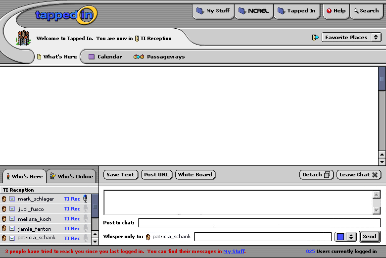

There were lots of changes discussed on Wednesday, so I may have missed some- but this should cover most of them. I would like to add icons to the subtopics of "my stuff" as well as to the \"project URL, save text, & whiteboard\" choices in the chat window. There are some minor UI changes, in terms of curves and shadows that I still need to spend time on, but didn't want to until we're happy with the overall layout. Enjoy!"
Very nice! In the chat area, I wonder if we'll need another send button; one for Chat, and one for Private Message. You might be composing in both input areas....but then again it is cleaner to have just one, and probably 90% of the time one will be fine.
For the record, here are some of the things we spoke about at our last meeting, which are addressed here:
- better indicate that top tabs are information (done with changed wording and new folder icons)
- make it more clear that subnav below room name is for the room (done graphically by removing the line between them and using curves)
- allow more favorite places and reduce items on screen (through the popup menu for Favorite Places, removing about | contact | site map)
- replace Neighborhood concept with Passageways: a place where the room owner can add links to other rooms they like
- make IM easier by adding a Private Message line below the chat input line
- make it easy for users to color code their comment (with color menu by chat)
- remove chat items that aren't needed (formatting tools, etc)
- reduce mouse movement to IM by moving who's here list to the left (click on a person to IM them) and also have close box on right
- add back chat functions that TI users like, including detach and project (post url)
- toned down the logo (for Mark! :)